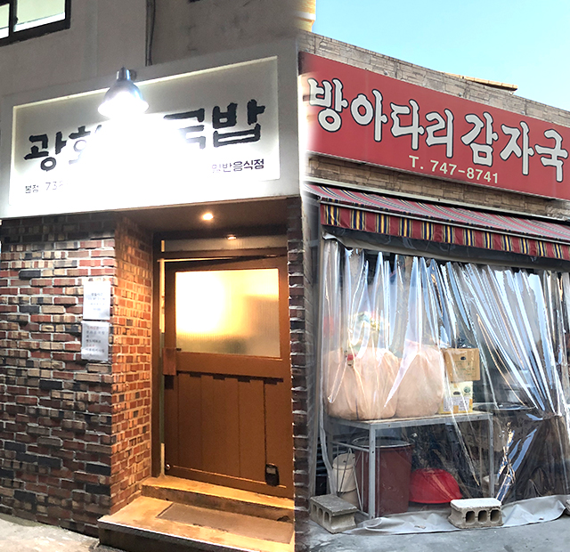
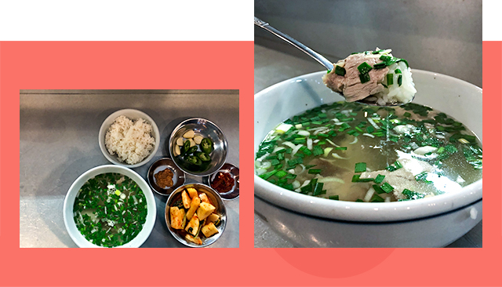
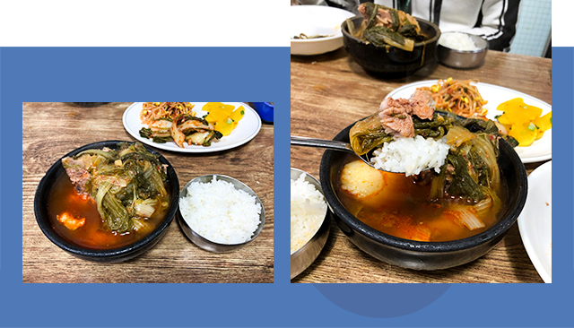

와 제 롤모델이 잡스에요!!! 아이폰 첫 출시되고 나서부터 계속 아이폰 쓰고 있는데 잡스가 너무 그리워요ㅠㅠ 지금은 돈만 벌려고 하는 것 같아서 디자인 발전도 없고ㅠㅠ와 제 롤모델이 잡스에요!!! 아이폰 첫 출시되고 나서부터 계속 아이폰 쓰고 있는데 잡스가 너무 그리워요ㅠㅠ 지금은 돈만 벌려고 하는 것 같아서 디자인 발전도 없고ㅠㅠ와 제 롤모델이 잡스에요!!! 아이폰 첫 출시되고 나서부터 계속 아이폰 쓰고 있는데 잡스가 너무 그리워요ㅠㅠ 지금은 돈만 벌려고 하는 것 같아서 디자인 발전도 없고ㅠㅠ와 제 롤모델이 잡스에요!!! 아이폰 첫 출시되고 나서부터 계속 아이폰 쓰고 있는데 잡스가 너무 그리워요ㅠㅠ 지금은 돈만 벌려고 하는 것 같아서 디자인 발전도 없고ㅠㅠ와 제 롤모델이 잡스에요!!! 아이폰 첫 출시되고 나서부터 계속 아이폰 쓰고 있는데 잡스가 너무 그리워요ㅠㅠ 지금은 돈만 벌려고 하는 것 같아서 디자인 발전도 없고ㅠㅠ
먹스타 맛집
마음까지 녹여주는 뜨끈한 ‘국밥 맛집’ 추천
맑은 국물 VS 빨간 국물
선택이 필요한 순간
선택이 필요한 순간
맛집 블로거, 먹스타그래머로 알려진 현상인들이 직접 맛집을 소개한다.

글·사진
이규린 사원(비용심사팀)
매서운 추위와 칼바람 때문에 뜨끈한 국물이 생각나는 계절이다. 담백한 맑은 국물 vs 칼칼한 빨간 국물, 당신의 선택은?
맑은 국물의 색다른 돼지국밥 ‘광화문국밥’
양식 셰프가 낸 국밥집이 요새 핫하다. 바로 광화문국밥이다. 광화문국밥은 돼지국밥을 필두로 고기국수, 평양냉면 등의 식사류와 돼지수육, 피순대, 갈비찜 등의 안주까지 꽤 다양한 메뉴를 선보인다. 가게 이름이 ‘광화문국밥’인 만큼, 대표 메뉴는 돼지국밥이다.

Info
-

 서울 중구 세종대로21길 53
서울 중구 세종대로21길 53 -

 02-738-5688
02-738-5688 -
 11:30 - 22:00 (B.T 14:30 ~ 17:30, 일요일 휴무)
11:30 - 22:00 (B.T 14:30 ~ 17:30, 일요일 휴무) -

 돼지국밥 ￦8,500 / 평양냉면 ￦10,000 / 수육 ￦23,000
돼지국밥 ￦8,500 / 평양냉면 ￦10,000 / 수육 ￦23,000
이 곳의 돼지국밥은 보통의 돼지국밥과 비주얼부터 다르다. 일반적인 돼지국밥은 뽀얀 국물에 다진 양념 한 덩이와 부추가 듬뿍 담겨 나오지만, 이곳의 돼지국밥은 다진 양념 없이 아주 맑은 국물에 작게 썰린 부추와 파, 그리고 얇게 썰린 돼지고기가 들어있다. 맛도 매우 색다른데다가 돼지로 육수를 냈음에도 불구하고 돼지 잡냄새가 거의 나지 않아 국물이 매우 담백하고 깔끔하다. 평소 잡내 때문에 돼지국밥에 도전하지 못했던 사람들도 충분히 즐길 수 있는 맛이다. 이런 맑은 국물에 밥을 말아 깍두기를 올려 먹으면 말 그대로 꿀맛이다.
광화문국밥은 최근 ‘2019 미슐랭 빕 구르망’에 선정된 곳이다. 오래된 인테리어와 다르게 아직 오픈한 지 얼마 되지 않은 식당인데도 불구하고 미슐랭 빕 구르망에 이름을 올린 것을 보면, 가히 인증된 맛집이라 할 수 있다.
탕과 국 그 사이, ‘방아다리 감자국’
종로 5가로 향하는 길목에 허름하고 작은 식당 하나가 자리 잡고 있다. 허름한 외관이지만 손님들로 가득 차 있는 이곳은 방아다리 감자국이다. 감자국이라는 다소 생소한 메뉴에 고개를 갸우뚱할 수 있지만, 음식을 보면 고개를 끄덕이게 된다. 감자탕과 비슷한 듯 보이지만, 방아다리 감자국은 냄비가 아닌 개인 뚝배기에 담겨 공깃밥과 함께 나온다. 감자탕에 비해 국물도 많고 훨씬 맑은 느낌이다.

Info
-
서울 종로구 종로39길 50
-
02-747-8741
-
10:30~16:30 (일요일 휴무)
-
감자국 ￦7,000
이곳은 감자국 단일 메뉴이기 때문에, 자리에 앉자마자 입구에 있는 커다란 솥에서 한 그릇 가득 담아 내어준다. 빨간 국물에 큰 돼지뼈와 감자 그리고 얼갈이배추, 재료는 아주 단순하다. 재료가 단순한 만큼 국물 맛도 아주 깔끔하다. 빨간 국물 색에 걸맞게 칼칼하고 얼큰해서, 국물을 먹으면 절로 해장이 되는 느낌이다.
방아다리 감자국은 허영만 화백의 유명한 만화 ‘식객’에 소개된 적이 있다. 만화 ‘식객’에는 철저한 검증을 거친 국내의 숨겨진 맛집이 소개되기에 맛있는 감자국(탕)을 먹고 싶다면 주저 없이 이곳을 택하면 된다. 유의할 점은 현금을 반드시 준비해 가야 한다는 점과 점심 장사 위주의 한정판매이기 때문에 시간을 잘 맞춰야 한다는 점이다.
-
최고예요
322
-
좋아요
322
-
슬퍼요
322
-
그저 그래요
322
-
화나요
322